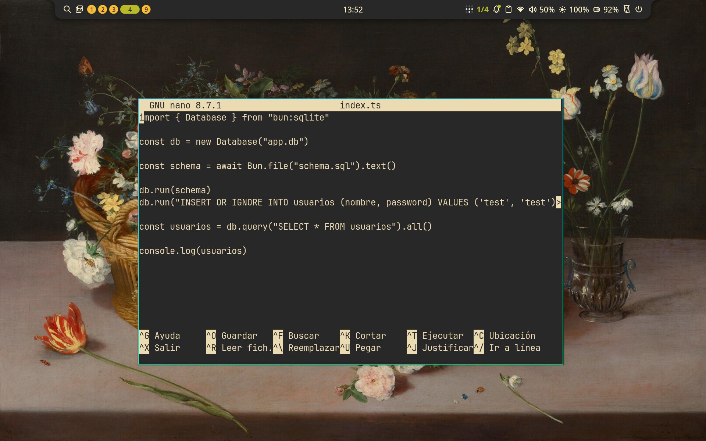
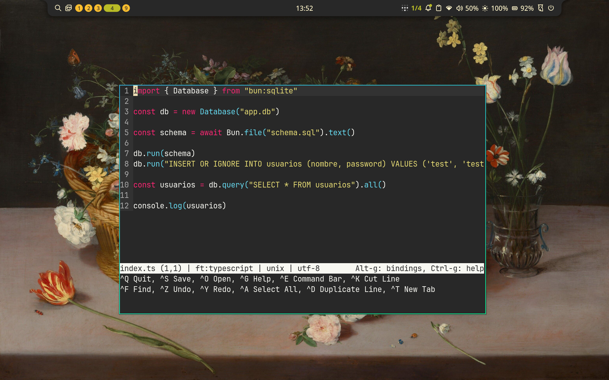
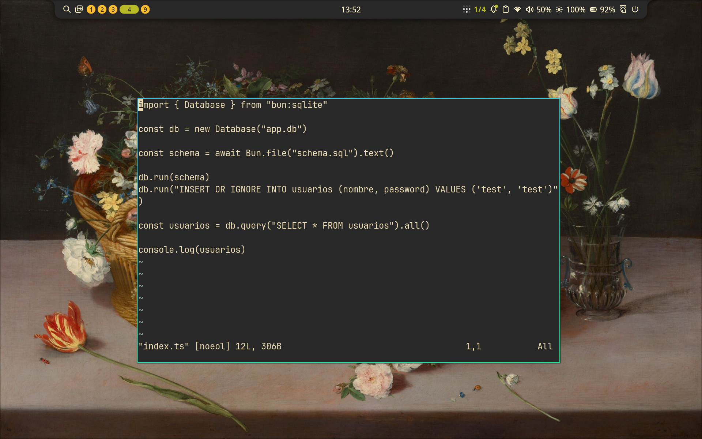
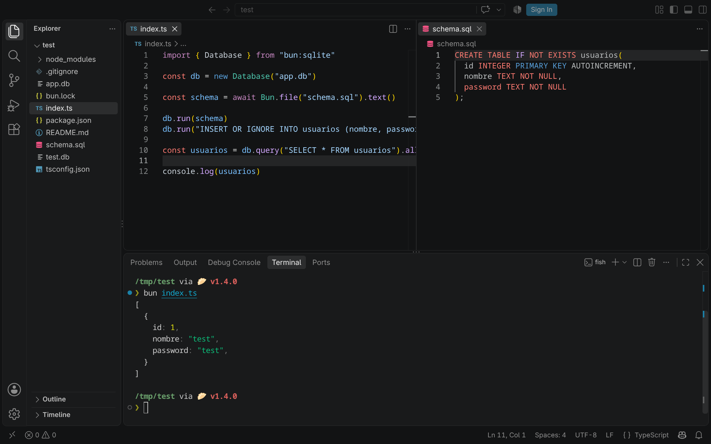
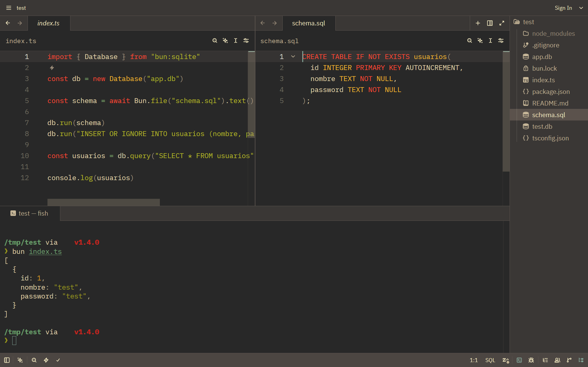
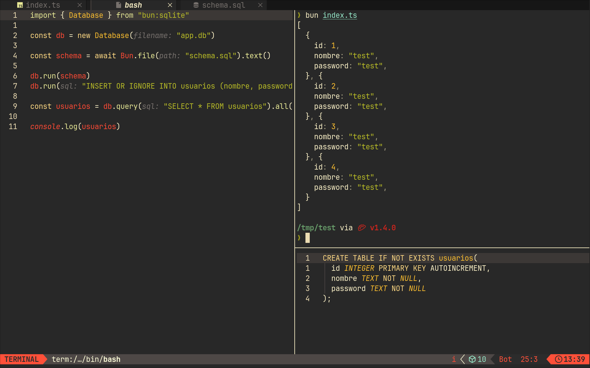
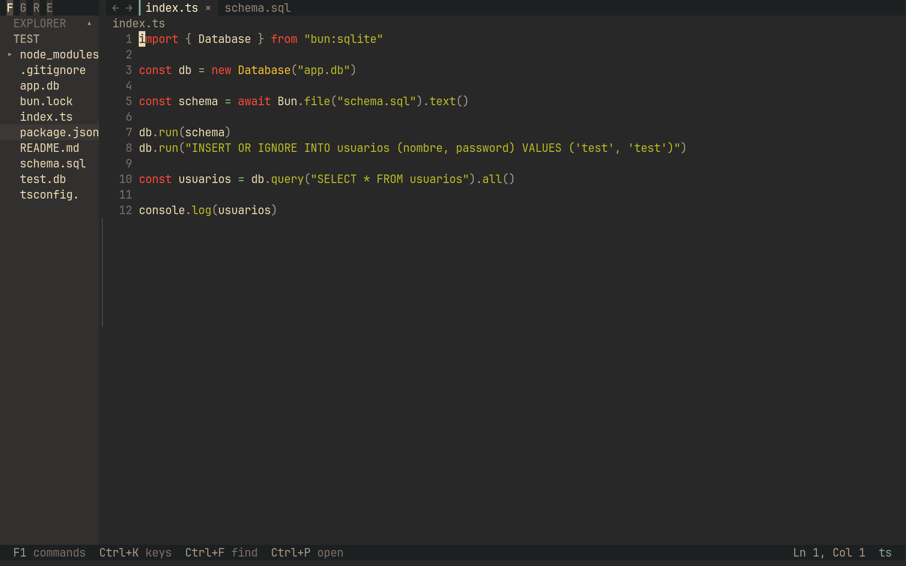
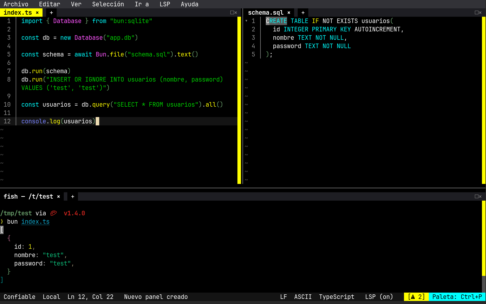

Editores de texto
Tanto si estas programando como si usas Linux a nivel básico, necesitarás un buen editor de texto para trabajar cómodo.
Hay demasiados editores de texto como para tratar todos en un mismo post, pero comentaré cuales he ido usando a lo largo del tiempo, sus ventajas e inconvenientes, y cuales se ajustan según que tipo de desarrollador seas.
Tipos de editores
Antes de ver que editores puedes usar, vamos a clasificarlos rápidamente:
Editor de texto / IDE
Un editor de texto es un bloc de notas de windows, puede tener algunas funcionalidades avanzadas, pero no le pidas nada demasiado especial. Son perfectos para editar archivos de configuración o escribir markdown y texto plano, son muy ligeros debido a esto.
Los IDE están pensados para editar código, los hay más minimalistas y autenticas bestias llenas de funcionalidades, no son la mejor opción para editar un simple archivo de configuración, en ocasiones tardarás más en abrir tu IDE que en editar la linea que necesitas, pero cuando estás programando o editando muchos archivos, los editores básicos de texto se quedan cortos y un IDE es la mejor opción.
GUI / TUI
Las GUI (Graphical User Interface) son aplicaciones gráficas, son las que estarás más acostumbrado a usar, Word es un editor de texto con interfaz gráfica, igual que tu Bloc de notas, son mucho más pesadas dependiendo de que hagan, pero pueden hacer cosas que una TUI no pueden, como renderizar gráficos e imágenes más fácilmente.
Las TUI (Terminal User Interface) son aplicaciones de terminal, con una interfaz que está creada con símbolos disponibles en una fuente de texto. Son mucho más limitadas en lo que pueden mostrar en pantalla, pero esto es lo que las hace más especiales, son más minimalistas en cuanto a que se muestra, pero suelen ser muy eficaces, hacen lo mismo (o más) que una GUI en muchos casos, y su consumo de ram es mínimo al lado de las aplicaciones gráficas.
Editores de texto
nano
Es el editor que suelen incluir la mayoría de distribuciones, funciona directamente en terminal, asi que podrás usarlo sin problema en un servidor con tty.

Es muy ligero, no tiene resaltado de sintaxis ni ayudas, y aunque en la parte inferior aparecen los comandos que tenemos disponibles, no son los que estarás acostumbrado, lo que puede incomodar. Aun asi, recomiendo que aprendas a usarlo mínimamente, con saber cambiar algo y guardar el archivo basta, ya que muchos servidores tendrán este editor y será el que uses para configurarlos.
micro
Un sustituto moderno a nano, sigue siendo terminal, pero visualmente es bastante más atractivo, también tiene resaltado de sintaxis y puede ser más que suficiente para editar código en tu día a día:

Al funcionar en terminal, podrás usarlo directamente en tus servidores sin problema.
vi
Otro editor que viene incluido en muchas distribuciones, es un editor muy minimalista de tipo modal, por lo que tendrás que moverte entre los modos normal para moverte en el texto, visual para seleccionar e insertar para escribir, te permite editar texto de forma muy efectiva y rápida, pero tiene una curva de dificultad considerable que no todo el mundo está dispuesto a superar.

No lo recomiendo si acabas de empezar a programar o empiezas en Linux, pero tenlo muy en cuenta cuando veas que necesitas editar texto más rápido y has dejado de pelearte con la sintaxis de los lenguajes.
IDEs
visual studio code
Prácticamente el estandar para muchos. Dispone de muchisimos plugins para personalizarlo como quieras, será raro que no encuentres uno para lo que necesites.

Por contra, es un editor gráfico, no puedes usarlo tan directamente en un servidor, y tiene muchisima telemetria de Microsoft.
Es el editor que más recursos consume en toda esta lista, necesitando hasta 2GB de RAM o más dependiendo de tus plugins y proyecto. El resto de editores de la lista ninguno llega a 1GB de memoria, y en algunos casos quedan por debajo de 500MB.
zed
Una alternativa a vs code, sigue siendo una interfaz gráfica, pero es mucho mas ligero y necesita menos recursos al estar escrito en Rust.
No tiene un ecosistema de plugins tan extensos como code, pero sus LSP funcionan automáticamente, y la terminal se integra muy bien.

neovim
Neovim está basado en vi, sigue siendo un editor modal, pero te permite configurarlo hasta el extremo para tener un IDE completamente personalizado a tu gusto.
Cada usuario tiene un neovim que se usa de forma distinta, tiene un ecosistema de plugins muy completo, con LSP para código, integración con git, terminales integradas, gestor de archivos, fuzzy search...

Es el que uso, una vez aprendes a editar modalmente es dificil volver a un editor clásico, y opciones como poder usar comandos de regex para buscar y editar texto hacen que seas muy eficiente escribiendo código.
Debes probarlo tarde o temprano, y darle una buena oportunidad durante dos o tres dias hasta sentirte cómodo.
druk
druk es un IDE minimalista para terminal, hiper ligero y rápido, pero que incluye LSP, gestor para git, terminal integrada y demuestra que un setup mínimo es más que suficiente para editar código en tu dia a dia.

fresh
fresh es un ide relativamente nuevo, también en terminal, y muy similar a druk, hiper ligero y muy rápido en arrancar y leer archivos, con LSP, terminal integrada y muy pensado para trabajar junto a agentes de IA.

Aunque tiene muy buena interfaz, a dia de hoy trabajar con LSP en este editor requiere algo de configuración, druk es mucho mas automático en esto, pero más limitado y minimalista en interfaz.
¿Con cual me quedo?
El editor es una elección muy personal, yo aprendería a al menos editar y guardar archivos con nano primero, lo encontrarás en todos sitios, incluyendo servidores, así que es necesario conocerlo.
En tu equipo, cuando hagas ediciones pequeñas de configuraciones, para evitar tener que lidiar con los comandos extraños de nano, elegiría micro.
En cuanto a IDE para programar, donde necesitas un buen syntax highlight, servidores de lenguaje, terminal integrada e integración con git/github es más complicado.
La recomendación fácil para alguien que empieza es vscode, pero cuando lo usas en un equipo con pocos recursos y a través de una máquina virtual va a tener un consumo de memoria enorme que puede ahogar tu máquina. El ecosistema de plugins puede ser llamativo, pero en mi opinión ningún plugin compensa ese consumo.
A día de hoy, si estuviera empezando de cero, intentaría dar una buena oportunidad a druk y fresh, son muy ligeros y tienen todo lo que necesitas para editar código, son hiper ligeros y funcionan directamente en terminal, asi que podrás instalarlos incluso en un servidor.
Aunque sea mi favorito, me cuesta recomendar neovim, editar código se siente como jugar a un street fighter con el texto, donde haces combos para editar de forma eficiente lo que necesitas, pero alguien que solo quiere escribir texto se volverá loco tratando de entender sus motions y acciones.